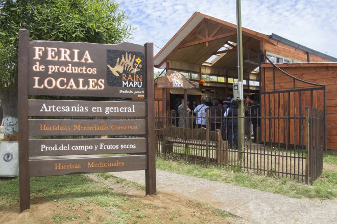
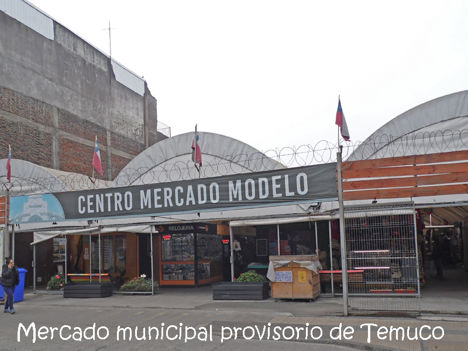
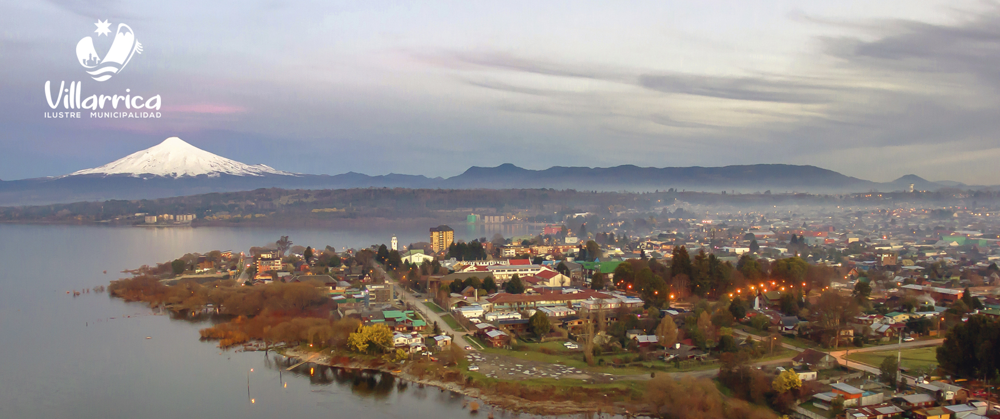

Gastronomía
Feria Rain Mapu
Feria de productos locales y preparaciones tradicionales en Teodoro Schmidt.
Consejo: consulta los días y horarios antes de visitar.
Apoya a quienes comparten los sabores, oficios y experiencias de La Araucanía.

Feria de productos locales y preparaciones tradicionales en Teodoro Schmidt.
Consejo: consulta los días y horarios antes de visitar.

Un espacio para conocer productos, artesanía y sabores de la región.
Ubicación: Temuco.

Infórmate en los puntos turísticos locales antes de recorrer la comuna.
Visitar sitio municipal (se abre en una pestaña nueva)